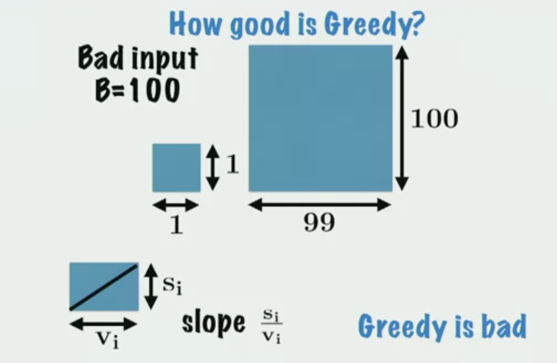
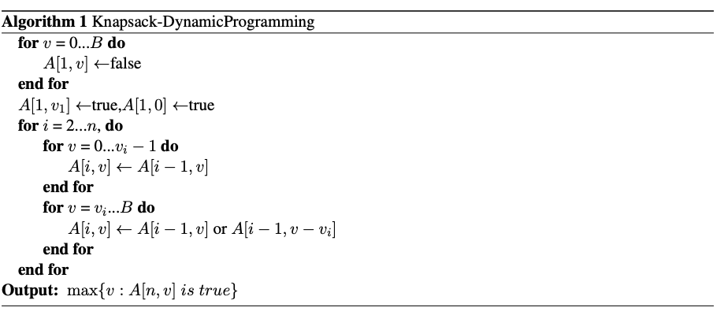
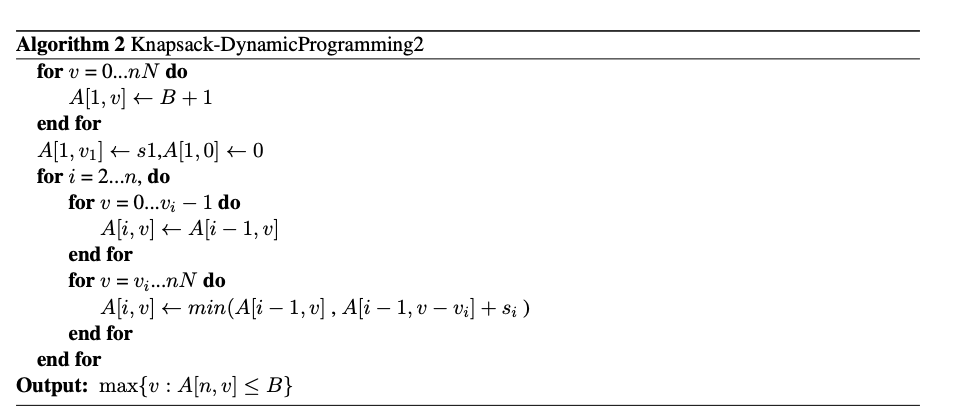
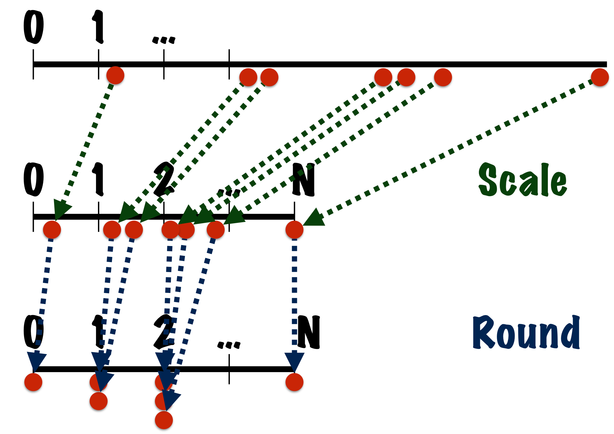

Approximation Algorithms Week 2--Knapsack and Rounding
课程来自Coursera
The Knapsack Problem
Problem Dedinition
- \(𝑁\)件物品，每件物品有一个体积\({𝑠_𝑖}\)和价值\({v_i}\), 现在有一个容量是\(𝐵\)的背包，要选一些物品装进背包，使得价值之和最大。约定不会有体积超过背包容积的物体。
- 背包问题是\(NP-Hard\)问题
Naive greedy algorithmm
- 思想：由于希望总体积更小，总价值更大。计算每件物品的\(\frac{\mathbf{s}_{\mathbf{i}}}{\mathbf{v}_{\mathbf{i}}}\)，从小到大排列依次放入背包。
- 评价：
special case 1：物品体积与价值相等
- a greedy algorithm
- 思想：将物品按价值降序排列，依次放入背包。
- 近似比证明：该算法的近似比为2
- \(proof\)：已知任意物品的体积都小于背包，则最终背包中至少包含一件物品。令最终放入背包的物品总体积为\(v\)，第一件放不进背包的物品体积为\(v_i\)，显然\(v + v_i \geq B\)。又因为该算法事先将物品按体积降序排列，则\(v \geq v_i\)，因此\(v \geq B/2\)，有物品装不进的时候背包至少是半满的，即该算法的近似比为2。
special case 2:在case1的基础上，物品与背包体积较小且为整数（因此此问题的动态规划算法是多项式时间的）
- Special dynamic
program：由于物品价值都比较小，考虑动态规划。\(A[i,v]\)表示\(i\)项物品的子集的体积和是否可以达到\(v\)。
- 
- analysis：
- 此问题的目标是使装入背包的物品的体积和\(v\)最大，此时存在\(n\)个物品的子集使得它们的体积和刚好达到\(v\)，即\(A[n,v]\)为\(true\)。
- \(v_1,v_2,...,v_n\)分别为物品\(1,2,...,n\)的体积，因为单个物品的体积总小于\(B\)，所以\(A[1,v_1]\gets true\)。
- 当考虑是否将第\(i\)件物品放入背包时，\(A[i,v](v<v_i)=A[i-1,v]\)，当\(v\geq v_i\)时有两种情况：
- （1）第\(i\)件物品暂时不装入背包，\(A[i,v]=A[i-1,v]\)
- （2）第\(i\)件物品暂时装入背包，\(A[i,v]=A[i-1,v-v_i]\)
- 经过上步得到的\(\max\{v:A[i,v] \; is \; true \}\)为从\(i\)件物品中挑选物品放入背包时得到的最大体积和。因此当从\(n\)件物品中挑选时，问题的解为\(\max\{v:A[n,v] \; is \; true \}\)。
special case 3：背包体积与物品的价值体积较小且为整数，物品的价值\(v\leq N\)，体积与价值不相等（一个略普遍的例子）
- dynamic program：\(A[i,v]\)表示\(i\)项物品子集的价值和达到\(v\)时的最小体积和。
- 
- 算法复杂度：\(O(n^{2}N)\)
Approximation Algorithm for general case(大，非整)
general case：物品个数\(n\)，背包的体积\(B\)
思想：scale(使每个物品\(i\)的价值\(0<v_i\leq N\)) and round（使每个物品的体积为整数）

算法：
- step1：丢弃体积大于\(B\)的物品。
- step2：令\(N=100n\)
- step3：对每个物品的体积进行scaling和rounding，\(\mathbf{v}_{\mathbf{i}}^{\prime} \leftarrow\left\lfloor\mathbf{v}_{\mathbf{i}} \times \frac{\mathbf{N}}{\max _{\mathbf{j}} \mathbf{v}_{\mathbf{j}}}\right\rfloor\)
- step4：对参数为\(B\),\((s_i,v_i')_i\)的背包问题进行动态规划,得到的原问题的解
算法复杂度：\(100*n^3\)
算法分析：
notation：
- \(S\) output items(scaled、rounded)
- \(S^*\) output items(scaled、unrounded)
- \(\alpha=M/\max v_i\) 放缩系数
定理：该算法得到的\(value\geq 0.99 OPT\)，时间复杂度为\(O(poly(n))\)
\(proof\):
由于\(S\)相比\(S^*\)经过了放缩（乘系数\(\alpha\)并向下取整），\(S^*\)是最优解，所以有\(\sum_{\mathbf{S}} \mathbf{v}_{\mathbf{i}}^{\prime} \geq \sum_{\mathbf{S}^*} \mathbf{v}_{\mathbf{i}}^{\prime}\)
由放缩公式\(\mathbf{v}_{\mathbf{i}}^{\prime} \leftarrow\left\lfloor\mathbf{v}_{\mathbf{i}} \times \alpha\right\rfloor\)知\(\mathbf{v}_{\mathbf{i}}^{\prime}>\alpha \mathbf{v}_{\mathbf{i}}-\mathbf{1}\)，因此\(\sum_{\mathbf{S}^*} \mathbf{v}_{\mathbf{i}}^{\prime}>\alpha \sum_{\mathbf{S}^*} \mathbf{V}_{\mathbf{i}}-\mathbf{n}\)
综上，
\[ \begin{aligned}\operatorname{Value}(\mathbf{S}) & =\sum_{\mathbf{S}} \mathbf{v}_{\mathbf{i}} \\& =\frac{1}{\alpha} \sum_{\mathbf{S}}\left(\alpha \mathbf{v}_{\mathbf{i}}\right) \\& \geq \frac{1}{\alpha} \sum_{\mathbf{S}} \mathbf{v}_{\mathbf{i}}^{\prime}\\& \geq \frac{\mathbf{1}}{\alpha} \sum_{\mathbf{S}^*} \mathbf{v}_{\mathbf{i}}^{\prime} \\& \geq \frac{\mathbf{1}}{\alpha}\left[\alpha \sum_{\mathbf{S}^*} \mathbf{v}_{\mathbf{i}}-\mathbf{n}\right] \\& =\mathbf{O P} \mathbf{T}-\frac{\mathbf{n}}{\alpha} \\& =\mathbf{O P} \mathbf{T}-\frac{\mathbf{n} \times \max \mathbf{v}_{\mathbf{i}}}{\mathbf{N}}\end{aligned} \]
又因为\(OPT\geq \max v_i\)
代入得到 \(Value(\mathbf{S}) \geq \mathbf{O P} \mathbf{T}-\frac{\mathbf{n}}{\mathbf{N}} \mathbf{O P T}\)
当\(\mathbf{N}=\mathbf{1 0 0} \times \mathbf{n}\)时， \(Value(S) \geq .99 \times\) OPT
knapsack问题的近似算法系统
- 定理：在上述算法中令\(N=1000n\)，得到的\(value\geq0.999OPT\)，时间复杂度是多项式时间的。
- knapsack的近似算法系统：对于任意\(\epsilon>0\)，可以利用近似算法得到满足\(\mid Value(Output)-OPT \mid \leq \epsilon \times \mathrm{OPT}\)的解，\(\epsilon\)越小，解越接近\(OPT\)，运算时间变大.